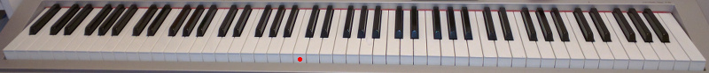

In order to learn about pitches on the staff, we're going to learn about the clavier — the keyboard.
Example 1.4
First, I want you to look at that red dot. That key, with the red dot, is called Middle C. By the way, this is a picture of my own shitty keyboard; I paid $600 for it in January 2008 at the music store. It was a refurbished model. I could probably have found something better for less money, but I needed a full 88-key keyboard with weighted keys. If you're learning music theory, you should probably get a keyboard too of some kind, but you probably don't need the full 88 weighted keys if you're not practicing piano music. You can probably get by with a much cheaper one.
It would be helpful, to be honest, even if it's a smaller model. For now, though, you can use the Offtonic Keyboard (if your browser supports it, anyway, and you'll also want to set your keyboard layout to QWERTY):
Why, thank you for the kind words! I recommend keeping a separate tab or window with this keyboard open whenever you're reading this book so that you can sound through examples easily.
Click on it to turn it on, and click outside it (or switch to another window) to turn it off. The border will go from light gray to darker gray to let you know. Then, you can click the individual keys to play notes, or use your computer keyboard (if it's in a QWERTY layout) to play the note marked with that computer key. I put the name(s) of each note at the top, and I put a red dot on Middle C for you. There are two rows. Now, obviously the real piano keyboard doesn't have two rows, but this one does. The lower notes are on the bottom row.
A couple other notes about the Offtonic Keyboard: if you click on a note with your mouse button and drag the pointer off, the note will keep playing until you click on it again. This can be useful. Also, middle C is actually on here twice, at the bottom right and at the top left; it doesn't need to be here twice but I figured it looks better this way. Finally, if you're playing with your computer keyboard, you may notice that certain combinations of keys just don't work. Unfortunately, that's a fact of how your computer keyboard is wired. I think there exist computer keyboards without this limitation, but if you're going to buy one of those, you might as well buy a regular piano keyboard, right?
Ran out of space on the computer keyboard. Sorry! It would have been nice to be able to play Bach's keyboard inventions on this, but unfortunately computer keyboards are only so big.
All right. Well, this is a keyboard. This one in particular has 49 keys, not counting the doubled Middle C. Johann Sebastian Bach, around 1700, would have used something like this (but not broken into two rows, obviously, and also probably not one written in JavaScript). The keys on a keyboard are grouped in a pattern: see the bunches of black keys? Two black keys, then three, then two, then three, etc.? Now, find a bunch of two black keys. Any bunch. The white key just to the left is called C. The next white key is called D, in between the two black keys. The next white key, to the right of the two black keys, is E. To the left of the three black keys is F; in between the first and second of the three black keys is G; in between the second and third of the three black keys is A; to the right of the three black keys is B.
The 12 notes from C to B, including the 7 white notes C D E F G A B as well as the 5 black notes, form what's called an octave.
That's right! That's because the octave is actually the distance from C to the next C, but technically the next C is part of the next octave. There are 8 notes from C to C, if you count both endpoints (which is stupid, but musicians aren't known for being mathematically consistent). We'll get more into intervals later.
Really quickly now, see if you can look at the picture of my piano keyboard (the real one) and find an F, an A, an E, a B, a G, a D, and a C. It doesn't matter which F or which A or whatever; just see if you can find one of each so that you can get a feel for identifying notes on the piano.
The numbers correspond to something called scientific pitch notation, and they just serve to tell you what octave on the piano the note is on. Octaves start at C, so B3 comes right before C4. The lowest C on the piano is C1 and the highest is C8. There are actually three notes lower than the C1, so those get an octave number of 0; the lowest note is A0. Lower than that, human hearing just doesn't really hear those vibrations as pitches (we'll talk more about this much later), but you can have C–53 or whatever; you just won't hear it as a note. Most of the time, though, there's no need to talk about specific octave numbers. I put them on the Offtonic Keyboard so that you can identify Middle C, which is C4 (the start of the fourth complete octave on the piano), but I won't generally be talking about octave numbers unless they're actually relevant.
There's actually another way people talk about octaves. Well, a couple of other ways. One is to use primes. So you have C, then going down in octaves, C', C'', C''', etc. Going up, you have C, then c, c', c'', c''', etc. c' is Middle C in this scheme, and it's called Helmholtz pitch notation. Another also uses uppercase and lowercase letters, but it repeats the letters instead of using primes, so going down you have C, CC, CCC, etc., and going up you have C, c, cc, ccc, etc. cc is Middle C in this scheme, and it's called English pitch notation. (We haven't talked about accidentals yet, but a low Bb in English notation would be BBb or BBBb; you repeat just the letter.)
I'm very glad you asked! First of all, don't be afraid of the black keys. I used to be when I was a little kid, because I had only learned the white ones! The black keys are just in between the white keys. We use a sharp (♯) to go up a note, and a flat (♭) to go down a note. These symbols are called accidentals for some reason.
...Sigh. Most fonts don't actually display them. It's stupid, but it's what it is. So in text, I will generally use # and b to refer to sharp and flat, respectively, instead of ♯ and ♭, which look similar. There hopefully won't be much occasion for confusion between a flat and an actual lowercase b. Note the differences, though: in a sharp sign, the vertical lines are actually vertical while the horizontal lines are tilted up; in the pound/number/mesh sign, the horizontal lines are actually horizontal while the vertical lines are tilted right. A flat sign is like a b but the bottom is pointy.
Anyway, go to the keyboard and find a G. (You remember where that is? Group of three black keys, white key between first and second black key.) The black key directly to the right of that is G#, and the black key directly to the left is Gb.
That's right. F# is the same note as Gb. But they mean different things: it's like the words "here" and "hear". They sound the same, but they mean different things. We'll talk about what notes might mean, and how to tell if a note should be spelled one way or another, in a later chapter.
Interesting, interesting! Look at the very top of the row of notes on the keyboard. When you sharp a note, you just go to the next one, and when you flat a note, you go to the previous one. So for Fb, find an F, then go down a note, which is also E. Fb is the same note as E! E# is the same note as F. Db is the same note as C#. B# is the same note as C. There are different ways to spell notes, and if two notes are the same note but have different spellings, those notes are called enharmonic. F# and Gb are enharmonic, for example. A# and Bb are enharmonic. B and Cb are enharmonic.
Cb4 is the same note as B3. The octave number changes at C, regardless of any accidentals on it.
There's the natural symbol (♮). This one restores a sharp or flat note (we'll explain more about this in a bit). I don't have an easy non-symbolic shorthand for it, so I usually write F♮ as "F-nat" or something like that, but most of the time it's not necessary. There's the double-sharp symbol (𝄪) and the double-flat symbol (𝄫), which I write as x and bb, respectively (so F-double-sharp is Fx and B-double-flat is Bbb); these symbols raise a note twice or lower it twice. So Fx would be F raised twice. Raise it once and you get F#; raise it again and you get Fx, which is enharmonic to G.
It's tricky to explain right now, unfortunately, but once you experience the magic of key signatures you'll understand why they're useful.
There are also half-accidentals, which we'll explore eventually. Those don't represent notes on the keyboard at all; they represent the notes in between the ones on the keyboard. Unfortunately there are no convenient HTML entities for those (not in a style I like, anyway) so I'll show them to you inside sheet music.
Now, pull up the Offtonic Keyboard (or a real keyboard if you have one) and play the following (try to follow my punctuation as a clue for how long to play each note):
A3, A3 E4-E4, E4-B3, C4-B3 A3... E4 G4 A4, G4 E4 F#4 D4 E4... A4 A4, A4 G4, E4 E4 D4 C4 B3-A3-G3... A3, E4 D4, C4 B3 A3 G3 A3...
Recognize it? Can you try to play it down an octave (A2, A2 E3-E3, etc.)? You can try to play it up an octave too, but you'll find that the A5 isn't in the range of your computer keyboard (though you can still play it by clicking).
Now try this:
Bb3, Bb3 F4-F4, F4-C4, Db4-C4 Bb3... F4 Ab4 Bb4, Ab4 F4 G4 Eb4 F4... Bb4 Bb4, Bb4 Ab4, F4 F4 Eb4 Db4 C4-Bb3-Ab3... Bb3, F4 Eb4, Db4 C4 Bb3 Ab3 Bb3...
So, do you recognize that?
Did you notice that the second one was a bit higher than the first one? If not, try playing the first phrase (up to the first ...) of the first version and then the same bit of the second version. You'll notice that the notes of the second version are just shifted up one note from the first version. This is called a transposition, when you shift every note up or down by the same amount from one version to another. Unless you have a particular superpower called perfect pitch, it doesn't make a big difference to you if you transpose an entire piece of music. It'll sound about the same, just higher or lower.
By the way, if you didn't try playing the notes I said earlier, you really should, because otherwise you won't get used to the keyboard and to finding notes on it. This is actually important.
Ah, here's a quick explanation. Wikipedia has more. Basically, it's historical accident. These were just the notes they had available. The letters actually went A B C D E F G H I K L M N O (there was no J in the alphabet back then), and when people started noticing that two notes an octave apart sound pretty similar (we'll talk more about that later), they switched over to repeating the letters they already had. Starting on C instead of A is kind of arbitrary as well; it's just the way it turned out. By the way, the A-G system is mostly an Anglophone thing these days. The German world has a similar system, but B actually refers to Bb and H is B natural.
You heard me! The notes in German go C D E F G A H, with B being the name of Hb (enharmonic to A#). The Wikipedia link has more on that.
Much of the rest of Europe, however, uses the familiar "do re mi" of The Sound of Music fame, and that's how I learned notes as a wee lad in Brazil. The syllables "ut", "re", "mi", "fa", "sol", and "la" are the initial syllables of the lines of a Gregorian chant melody called "Ut queant laxis" that actually start on those notes; "ut" was changed to "do" in some places, and the concluding line "Sancte Iohannes" became "si", the seventh note name. Some places changed "si" to "ti" so that each note starts with a different letter. I learned it as "si".
Still other systems have other names for notes. Arabic, Turkish, and Indian have their own note systems with their own names; for example, "Sikah" is the Arabic name for Ed4. That's E half-flat above Middle C.
...
I'll summarize: you should be able to find Middle C on a keyboard (without the red dots). You should also be able to find any note on the keyboard, including sharps and flats, by finding groups of black keys and figuring out which white notes are which, then moving up or down if there are accidentals. You should actually be able to do this well, so practice on your own if you're still not quite there. Indeed, you should see if you can figure out any other songs by playing around. Can you figure out Twinkle Twinkle Little Star? Yankee Doodle? Middle C is often a good note to start on (but it's not always the best). Try to start on other notes for practice, though. Just be careful about going outside the range of the keyboard!
If you want to learn music theory, the best thing you can do is figure out how to play some melodies by ear. The best. Now that you have an instrument, even if it's just my virtual keyboard, you should be able to do that!
Up: Chapter 1: The Basics